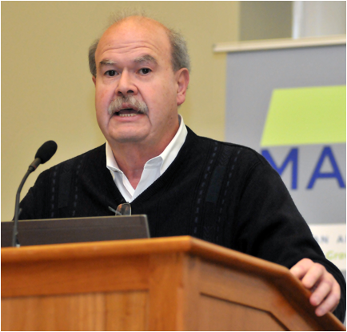

Keynote Speech 1 (Sunday, 9:00-10:00)
 Beyond the Two Cultures: A Crisis in Representation.
Beyond the Two Cultures: A Crisis in Representation.
Prof. Roger Malina
(The University of Texas at Dallas, USA)
Abstract
As an astrophysicist, I have spent my career bathing in astronomical data, the data world is as real to me as the sensory physical world. Yet we are still in the stone age of representing digital data in forms that we can understand and feel. Three years ago I started the UT Dallas ArtSciLab where artists and scientists work side by side making trouble with data. I will present our work with neuroscientists, astronomers and geoscientists and also talk about the new born digital hybrids whose existence gives the lie to the very concept of C P Snow’s Two Cultures.
Short Bio
Malina is a space scientist and astronomer, an art-science researcher, Arts and Technology Distinguished Chair Professor, and Professor of Physics, at UT Dallas. He obtained his B.S. in physics from MIT in 1972, and his Ph.D. in astronomy from the University of California, Berkeley, in 1979. Founded the ArtSciLab which hosts projects which involve collaboration between artists and scientists, resulting in art works, scientific data exploration tools, and public engagement activities involving the integration of the arts, design and humanities in science, technology, education and mathematics (STEAM). Malina is an elected member of the International Academy of Astronautics. "Laser d’or" Prize, from the International Video Art Organization.
Keynote Speech 2 (Monday, 9:00-10:00)
 Visual Analytics and the VAST Challenges:
this year’s Challenge and a retrospective look at an influential international competition.
Prof. Georges Grinstein
(University of Massachusetts Lowell, USA)
Abstract
The VAST Challenges are a decade old and have had large international participation. The challenge data sets are mostly synthetic with embedded ground truth and participants are asked stop solve a particular problem, which in many cases involves discovering that ground truth, which in turns makes it easier to objectively evaluate submissions. But submissions are also evaluated several other ways. I will discuss several key problems in Visual Analytics, provide examples of how the VAST Challenges were developed as an attack on these problems, and show award winning solutions. I will also discuss the importance of open source tools in solving these problems.
Short Bio
Georges Grinstein is Professor of Computer Science at the University of Massachusetts Lowell, was head of its Bioinformatics Program, Director of its Institute for Visualization and Perception Research, and is now Chief Scientific Officer of Weave Visual Analytics. He received his Ph.D. in Mathematics from the University of Rochester in 1978.
His work is broad and interdisciplinary, covering the perceptual and cognitive foundations of visualization, very high-dimensional data visualization, visual analytics and applications. The emphasis is on the modeling, visualization, and analysis of complex information data and systems.
He has over 40 years in academia with extensive consulting, over 300 research grants, products in use nationally and internationally, several patents, numerous publications in journals and conferences, a book on interactive data visualization, founded several companies, been the organizer or chair of national and international conferences and workshops in Computer Graphics, in Visualization, and in Data Mining. He has given numerous keynotes and mentored over 40 doctoral students and hundreds of graduate students. He has been on the editorial boards of several journals in Computer Graphics and Data Mining, a member of ANSI and ISO, a NATO Expert, and a technology consultant for various government agencies and commercial organizations.
For the last ten years he has co-chaired the IEEE VAST Challenges in visual analytics leading to new research areas. He has developed and taught new courses, one of which Radical Design focused on how to develop radical new products instead of evolutionary ones. He is a member of the Department of Homeland Security’s Center of Excellence CCICADA (Command, Control and Interoperability Center for Advanced Data Analysis), and directs the development of Weave, an open source web-based interactive collaborative visual analytics system incorporating numerous innovations.